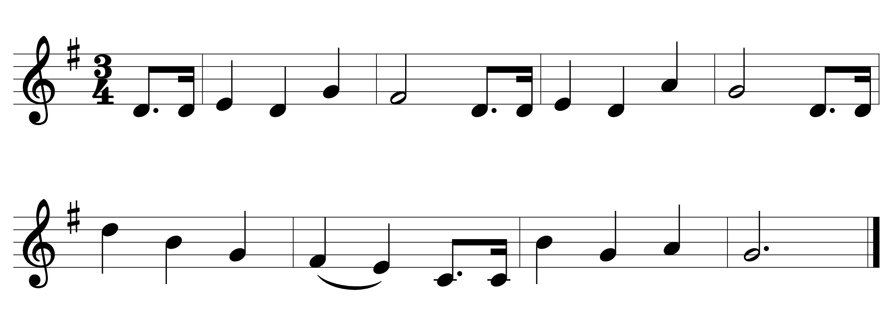
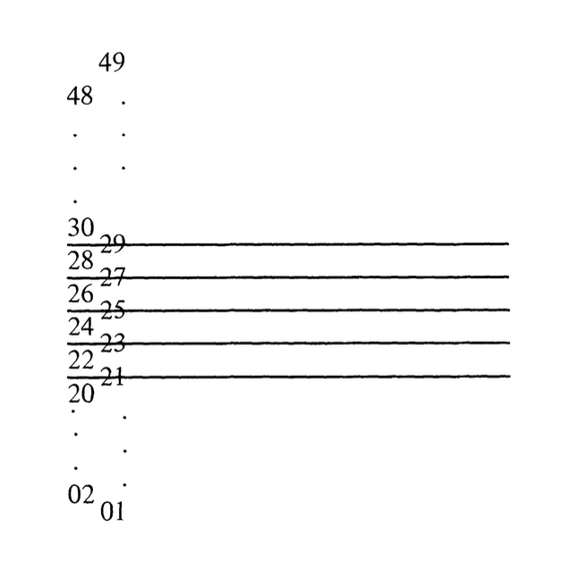
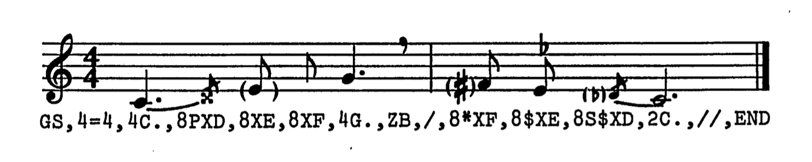

### installing everything as needed
library(devtools)
devtools::install_github("Computational-Cognitive-Musicology-Lab/humdrumR", build_vignettes = FALSE)Week 1: Representing Musical Data
Overview
This week, we will be working through what it means to represent musical ideas through text.
It’s also probably worth having another look at the syllabus and the course structure.
Going forward, it might be worth adding a few things to your computer: I would recommend downloading R and RStudio onto your personal machine, as soon as you can.
We will also be doing a lot of in-class examples in R, specifically with the HumdrumR toolkit. Some of you may prefer using Python or even the command line for projects, and that’s fine, but in class we will mainly be working with R.
In the code below, we install the necessary library. As you can see, you will need to install devtools, which will allow you to install packages that aren’t on CRAN from github.
Representing Musical Information
Music, as an object, is a fairly difficult thing to represent. We can represent soundwaves, pitch, loudness, timbre, etc ., but those are just components of this thing that we call “music”. We have to consider the sonic, the notated, and also broader aspects of structure (and logic).
In this class, we will start by looking at notated scores, which themselves are an abstraction of “the musical object.” (For example, Ryan Adams playing a Taylor Swift song might look identical on the score to Taylor Swift’s version, but they are markedly different.) Even if we decide to begin with musical notation, however, we face some issues.
Let’s take the “Happy Birthday” for example:

With DARMS (1966–1980ish)
DARMs was a project in in the 1960s and 1970s, spearheaded by Stefan Bauer-Mengelberg. It was also called the Ford-Columbia encoding language, and was intended to make it affordable and manageable for anyone to have their own scores, and to be able to print them cheaply. It was also the hope that non-musicians would be able to encode scores, which would make the process more affordable to all.
As such, notes were just encoded by a spatial point.

So to encode something like “Happy Birthday” in DARMS, we might approach it something like this:
!G
!M3:4
20E.U 20SU / 21QU 20QU 23QU / 22QU 20E.U 20SU /
21QU 20QU 24QU / 23HU 20E.U 20SU /
27QD 25QD 23QU / 22LQU 21LQU 19E.U 19SU /
25QD 23QU 24QU 23H.U //
There are a number of different codes and tags that can be included, ranging from key signatures to instruments to articulations. Rhythms are encoded as follows:
W whole
H half
Q quarter
E eighth
S sixteenth
T thirty-second
X sixty-fourth
Y 128th
Z 256thAs you can imagine, this can get a little cumbersome. Here’s an example by Stephen Dydo using DARMS, with the input code below. Try to parse it as best you can:

With MUSTRAN (1967–1980ish)
Here is what “Happy Birthday” would look like as encoded with MUSTRAN:
GS,K*F+,3=4,8D.,16D,/,4E,4D,4G,/,2*F,8D.,16D,/,
4E,4D,4A,/,2G,,8D.,16D,/,4D+,4B,4G,/,4*F,4E,8D.,16D,/,
4B,4G,4A,/,2H.G//,END
MUSTRAN was created with the goal of encoding non-Western musics, and was inherently extensible. Notice here how one can encode indeterminate pitches, breath marks, and microtones.

Humdrum (1985–present-ish)
Here is how we might encode it in the commonly used kern format, for use with the Humdrum Toolkit:
!!!OTL: Happy Birthday
**kern
*M3/4
*G:
*k[f#]
L8.d
16dJ
=
4e
4d
4g
=
2f#
L8.d
16dJ
=
4e
4d
4a
=
2g
L8.d
16dJ
=
4dd
4b
4g
=
(4f#
4e)
L8.c
16cJ
=
4b
4g
4a
=
2g.
==
*-Some points worth mentioning:
- There is a distinction between metadata and musical data (the exclamation marks serve as comments of sorts).
- Notice how pitches are given specific octaves:
dis seperate fromddwhich is separate fromD. - Pitches are grouped with
LandJto indicate beaming, and slurs are indicated with parentheses. - There are score-wide elements, such as the meter (
*M3/4), and a key signature (*k[f#]). - There is also a syntax for providing musical data that might not actually exist in the score. For example, with a key signature of one sharp, it could be G major, but it could also be in E minor. So an explicit mentioning of the key is helpful.
- Perhaps more abstractly, notice that this is a two dimensional score of sorts: every moment of time is a new line, meaning one can search by line to find specific instances. This is particularly useful with polyphonic music.
You can try this out at the Verovio Humdrum Viewer Website
Counting Pitches
For the discussion post this week, you will be asked to encode a melody and count events in that melody. We can look at it with three specific ways:
- Humdrum, which is a series of UNIX tools that allow you to conduct analysis by piping together specific tools.
- HumdrumR, which is a newer updating of the original Humdrum but using R.
- music21, which might be of interest to some.
Although not necessary at all for this class, some of you might be interested in downloading the original Humdrum to your UNIX-based computers and installing it. If you use a Windows machine, there are also Cygwin options.
Then, we install the package (you can uncomment these installation lines as necessary for you.
Once that installation has worked, you can try to load the library:
library(humdrumR)pitch -x happy_birthday.krn | rid -GLId | grep -v '=' | sortcountThis will give us a list of pitches and a count:
8 D4
5 G4
3 E4
2 F#4
2 B4
2 A4
2 C4
1 D5First we load the data in to a variable:
happy_birthday <- readHumdrum("class_notes/happy_birthday.krn")There is a count function in HumdrumR, which would allow for something like:
happy_birthday |> count()
Unfortunately there seems to be a bug with it reading my Happy Birthday, so I’ve just done it the longer way:
happy_birthday |> pitch() |> as.data.frame() |> group_by(V1) |> summarise(total = n())Notice that I could look at things other than pitch, if I wanted to use deg instead of pitch for example (this also would work in Humdrum)
Here is the python code that will get the same thing:
# Get unique pitches
from music21 import converter
from collections import Counter
# Parse the kern file and extract all the pitches
score = converter.parse('happy_birthday.krn')
all_pitches = score.pitches
# Count occurrences of each pitch
pitch_counter = Counter(str(p) for p in all_pitches)
# Print results and sort!
print("Pitch counts:")
for pitch_name, count in pitch_counter.most_common():
print(f"{pitch_name}: {count}")Counting By Scale Degree
Pitches sometimes contain meaning when looked at simply as pitches, but other times they need to be normalized in some way, such as by a scale degree. This allows us to see the pitch in relation to the braoder key.
deg -x happy_birthday.krn | rid -GLId | grep -v '=' | sortcountThis will give us a list of scale degrees and a count:
9 5
5 1
3 6
2 7
2 4
2 2
2 3If we didn’t use the -a flag, it would include the scale degrees and whether it was ascending or descending.
First we load the data in to a variable:
happy_birthday <- readHumdrum("class_notes/happy_birthday.krn")There is a count function in HumdrumR, which would allow for something like:
happy_birthday |> count()
Unfortunately there seems to be a bug with it reading my Happy Birthday, so I’ve just done it the longer way:
happy_birthday |> deg(simple =T) |> as.data.frame() |> group_by(V1) |> summarise(total = n())Much like the -a flag in Humdrum, simple=T provides us with only scale degrees, and no information about the movement of the pitch.
from music21 import converter, pitch, analysis
from collections import Counter
# import (parse) the kern file
score = converter.parse('happy_birthday.krn')
# figure out the key
pitch_count = analysis.discrete.KrumhanslKessler(score)
key = pitch_count.getSolution(score)
# Count scale degrees for each note
for n in score.flat.notes:
scale_degree = key.getScaleDegreeFromPitch(n.pitch)
scale_degree_counter[scale_degree] += 1
# Print results
for scale_degree, count in Counter.most_common():
print(f"Scale Degree {scale_degree}: {count}")A More Complicated Example
In the code below, you can see how we load all of the Chopin files into a preludes variable with the readHumdrum function.
Then we subset it by spines. We are interested in various ways of calculating pitch, so we looked at pc (pitch class), as well as solfa and deg, which gave us solfege syllables and scale degrees, respectively.
We then plot this data in a barplot. Note the |> or “pipe” that we are using. The older tidyverse-style pipe (%>%) will also work here.
### Load in Chopin preludes, grab the left hand and see all the scale degrees.
preludes <- readHumdrum("data/humdrum_scores/Chopin/Preludes/*.krn")
left_hand <- subset(preludes, Spine == 1)
###solfa, deg, pc
table_data <- with(left_hand, deg(Token,simple=TRUE)) |> table()
barplot(table_data)Here we see that scale degrees 1 and 5 are the most common in the left hand of the Chopin Préludes, and we were able to do it with only a couple of lines of code. Note that the Spine is ordered in ascending order, with the lower staves on the left (and listed as 1).
Reflecting
- We might think about the choices made in encoding musical information.
- What decisions does one have to make?
- What information is lost in these decisions?
- What notational parameters would you need to represent in order to encode some of your favorite music?
- How would it be encoded?